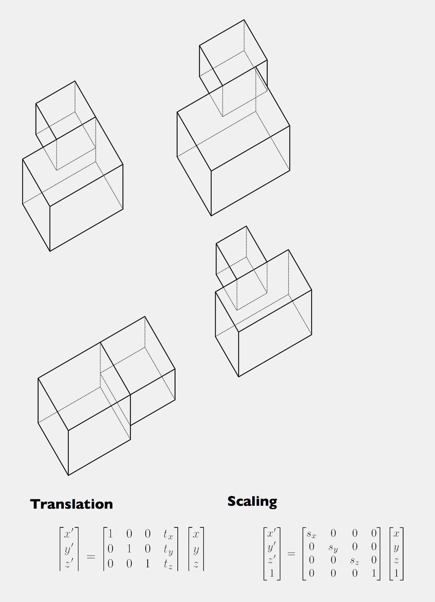

<h4>Space as Transformation</h4>
<p>
Adolf Loos - Raumplan - Translation and Scaling

</p> 

<div>
	.math x .building
	<div style="float: right">
		<span class="mbIndexL" > << </span>&nbsp;&nbsp;&nbsp;<span class="mbIndexR"> >> </span>
	</div>
</div>

